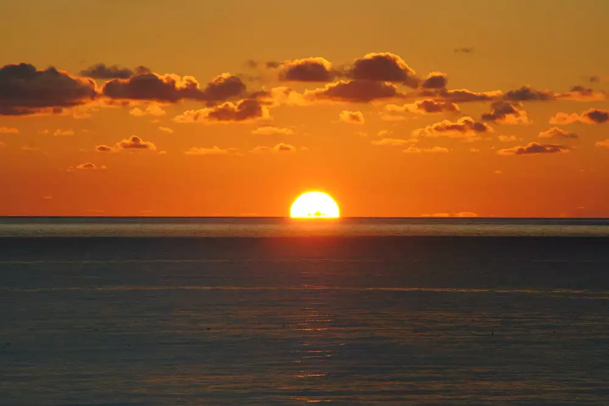

I Love the Sunset
01/11/2022
Sunsets are romantic, inspiring and Instagram-able, yet most of us only make time for this special experience when we are on vacation. Newsflash - you do not need to be in an exotic place, free of obligations, to enjoy the calming, beautiful, and life-changing moments of a sunset.
The sun rises and sets every single day, no matter where you are. Let me repeat myself: Every. Single. Day. So there is no reason why you cannot take a few minutes to infuse your day with wonder and stop to enjoy it.